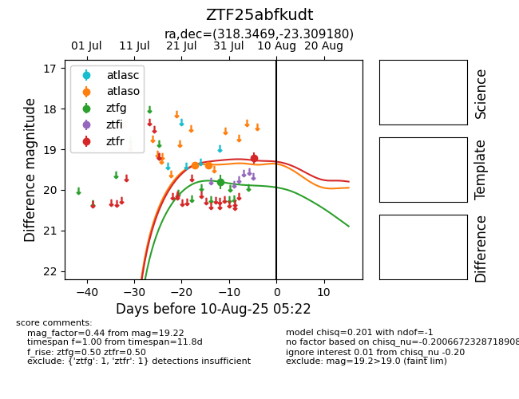

Target ZTF25abfkudt at 2025-08-10 05:22, see:
FINK: fink-portal.org/ZTF25abfkudt
Lasair: lasair-ztf.lsst.ac.uk/objects/ZTF25abfkudt
ALeRCE: alerce.online/object/ZTF25abfkudt
alt names
ZTF25abfkudt (ztf,fink)
coordinates:
equatorial (ra, dec) = (318.3469,-23.30918)
galactic (l, b) = (24.6344,-40.91369)
photometry
last atlaso=19.39, ztfg=19.81, ztfr=19.22
2 atlaso, 1 ztfg, 1 ztfr detections
